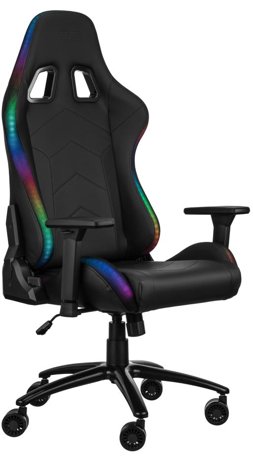

2E GAMING OGAMA II
– тепер можливо все!

Налаштуйте свої правила гри, відкиньте обмеження та відчуйте справжню природну сутність разом із оновленим кріслом 2E GAMING OGAMA II!
Перевірений дизайн із природним підтриманням тіла
Геймерський дизайн крісла перевірений мільйонами годин гри. Крісло ніби огортає тіло, аби користувач був максимально сконцентрованим на грі, навчанні чи роботі. Ергономіка настільки природна, що з крісла не хочеться підводитися. Сядьте на нього хоча б на хвилину, щоб зрозуміти, що таке крісло, яке знається на комфорті і турботі про здоров’я.